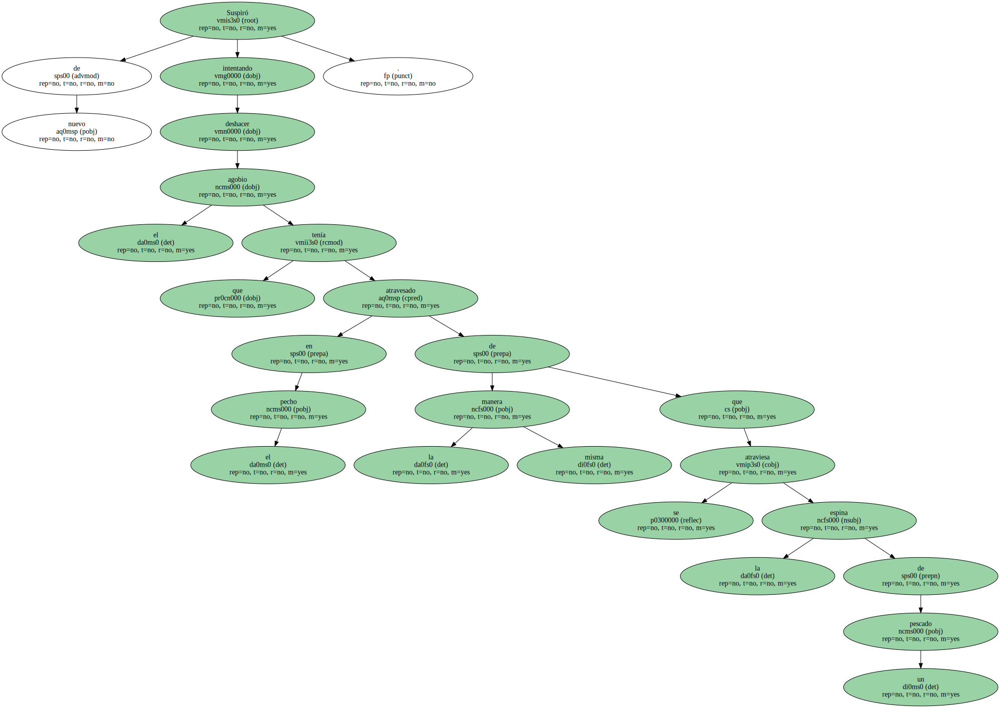
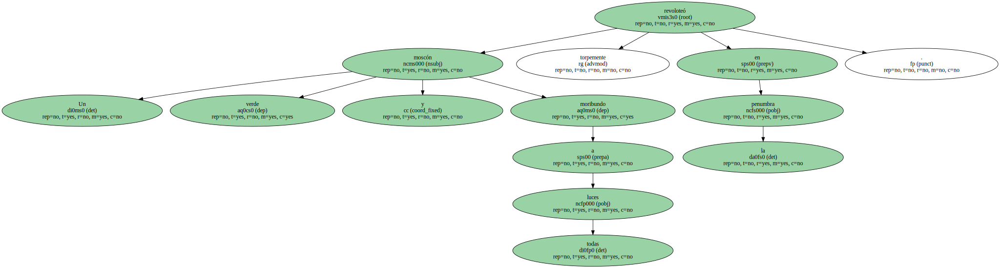
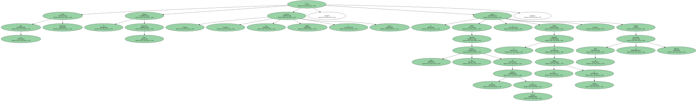
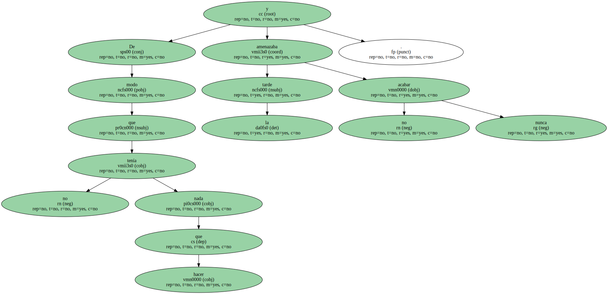
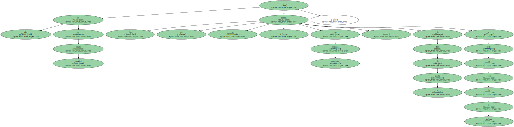
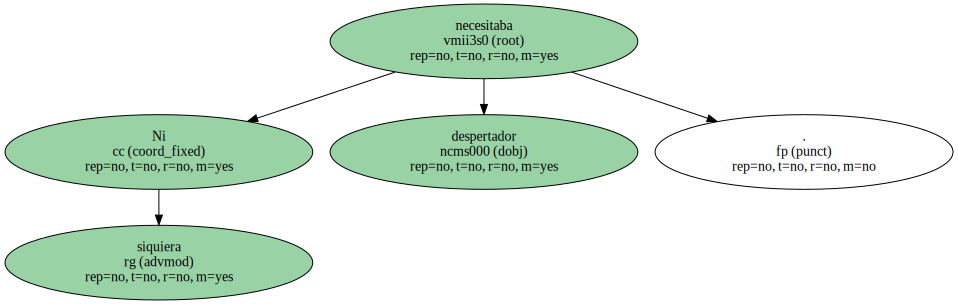
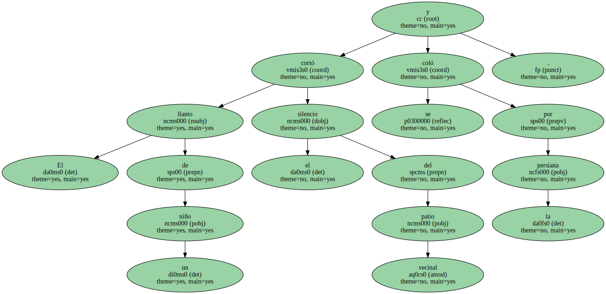
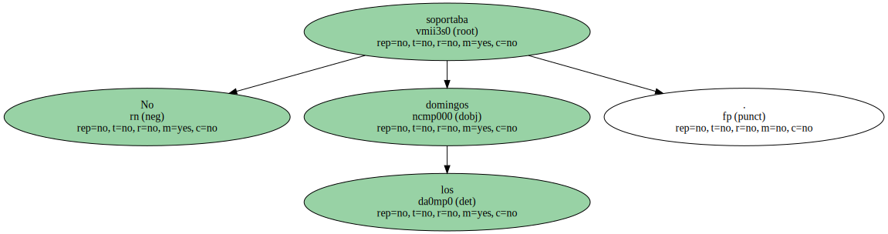
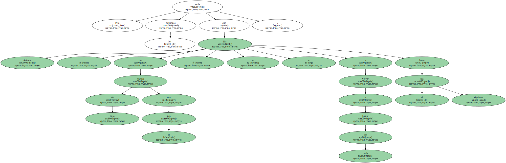

Suspiró de nuevo intentando deshacer el agobio que tenía atravesado en el pecho de la misma manera que se atraviesa la espina de un pescado.
Un moscón verde y a todas luces moribundo revoloteó torpemente en la penumbra.
La ropa estaba planchada , los armarios bien dispuestos , las cacerolas limpias y secas , y la víspera había repasado todos los botones de las camisas de Antonio y subido el dobladillo de sus trajes de verano , porque la moda se presentaba faldicorta.
De modo que no tenía nada que hacer y la tarde amenazaba no acabar nunca.
- Si por lo menos pudiera echarme la siesta , como Antonio - , se dijo , secándose el sudor del labio superior con un pico de la bata.

Pero ella era de natural metódico y sólo se dormía , con asombrosa precisión , de doce de la noche a siete en punto de la mañana.
Ni siquiera necesitaba despertador.
El llanto de un niño cortó el silencio del patio vecinal y se coló por la persiana.
No soportaba los domingos.
Los días de diario siempre se podía bajar a última hora a comprar medio litro de leche , o una pizca de azafrán , o a dar una vuelta por alguno de los grandes almacenes.

Pero los domingos Antonia sabía que , tras regresar de misa con el pan , ya no iba a volver a hablar con nadie hasta el día siguiente.
